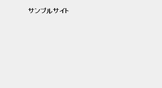
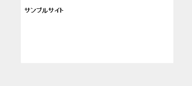
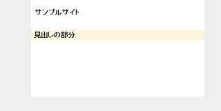
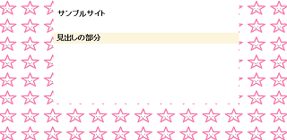
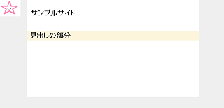
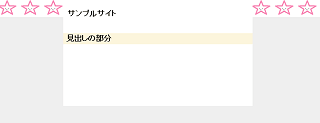
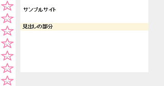

背景の指定をするCSS - background
CSSで背景の色彩や画像を指定するには以下のように記述します。
①background-color → 色彩コードで指定
②background-image → 画像を使って指定
③background → すべてをまとめて指定
■①色彩コードでの指定 → background-color
「#ffffff」などの色彩コードで背景色を指定するには「background-color」を使います。
サイト全体のbodyや見出しタグの背景色で使うケースが多いです。
画像を使って背景を指定するケースはそう多くはないので、この色彩コードで指定する「background-color」の使用頻度が一番高くなると思います。
.example {
background-color:#色彩コード;
}
例えば、サイト全体の「body」の背景色を灰色にする場合、以下のように指定します。
body {
background-color:#efefef;
}
このように記述すると以下のように表示されます。

この場合、サイト全体が灰色になってしまうため、コンテンツに該当する部分を白「#ffffff」にするよう、合わせて設定するとよいでしょう。
.example {
background-color:#ffffff;
}

あるいは、h2やh3などの見出しタグを背景色で指定する場合も多いです。
h2 {
background-color:#fcf5dc;
}

■②画像での指定 → background-image
一方、画像を使って指定する際は「background-image」を使い、画像のurlを指定します。
body {
background-image:url("画像のurl");
}
例えば、こちらの画像があったとします。
これを背景に指定すると以下のようになります。

デフォルトでは繰り返して表示されますので、リピートせずに１度だけ表示する際は「background-repeat」で「no-repeat」も合わせて設定しておきます。
body {
background-image:url("画像のurl");
background-repeat:no-repeat;
}

横方向へリピートする際は「background-repeat: repeat-x;」を指定します。
body {
background-image:url("画像のurl");
background-repeat:repeat-x;
}

縦方向は「repeat-y」です。
数学の横方向のＸ軸、縦方向のＹ軸と同じように考えればよいでしょう。
body {
background-image:url("画像のurl");
background-repeat:repeat-y;
}

また、サイト全体の背景をグラデーション素材などで設定する際は、小さめの素材を使用して横方向へリピートさせるケースが多いです。
→ 背景画像でホームページをカスタマイズ
この「background-color」と「background-image」の２つの基本を踏まえ、両方を同時に指定する際は「background」ですべてをまとめて指定することができます。
■③まとめて指定 → background
body {
background:#efefef url("画像のurl") no-repeat;
}
画像が表示されないケースに備え、色彩コードも指定しておくとよいでしょう。
こちらはスタイルシートで設定する際の記述方法になりますが、ピンポイントでhtmlに直接指定する際は「style="background-color:」を使うこともできます。